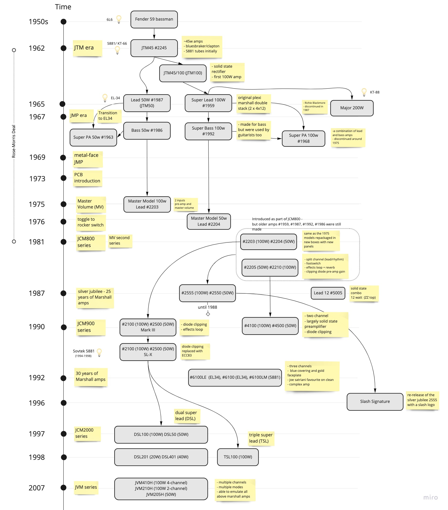

- Mon 23 May 2022
- Music
- #guitar amp, #marshall, #genealogy tree, #family tree, #marshall history
This is an attempt to capture the evolution and history of Marshall amps, covering the period from the release of the JTM45 in 1962 and up to the release of the JVM series in the late 2000s. This is work-in-progress, feel free to suggest correction and ways to extend the diagram. What I'm planning to add nest is the re-visited DSL series after 2012 and the Origin series.
Marshall Amps Genealogy Tree
